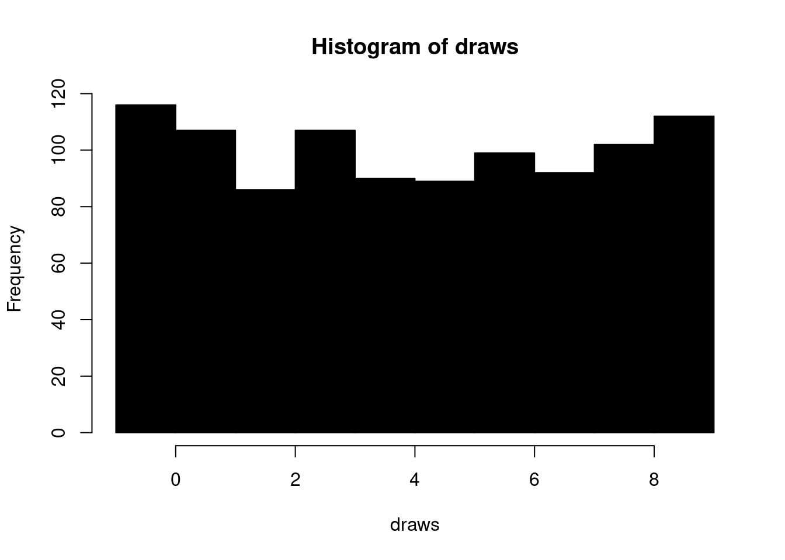
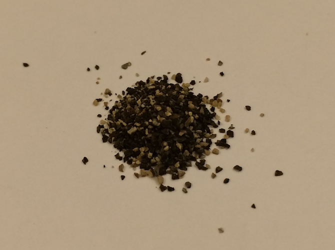

Chapter 3 Vectors
Primary Source:
3.1 Vector basics
In some ways, working with vectors is harder than working with dataframes and data tables. That’s slightly counterintuitive, as they’re the most atomic unit one works with in R. In Manning’s *Practical Data Science with R` they state:
"R’s most basic data type is the vector, or array….R is fairly unique in having no scalar types. A single number such as the number 5 is represented in R as a vector with exactly one entry (5).
There are two types of vectors:
Atomic vectors, of which there are six types: logical, integer, double, character, complex, and raw. Integer and double vectors are collectively known as numeric vectors.
Lists, which are sometimes called recursive vectors because lists can contain other lists.
The chief difference between atomic vectors and lists is that atomic vectors are homogeneous, while lists can be heterogeneous. There’s one other related object: NULL. NULL is often used to represent the absence of a vector (as opposed to NA which is used to represent the absence of a value in a vector). NULL typically behaves like a vector of length 0. Figure 20.1 summarises the interrelationships.

20.1
Every vector has two key properties:
Its type, which you can determine with
typeof().## [1] "character"## [1] "integer"Its length, which you can determine with
length().## [1] 3
This chapter will introduce you to these important vectors from simplest to most complicated. You’ll start with atomic vectors, then build up to lists, and finish off with augmented vectors.
3.2 Important types of atomic vector
The four most important types of atomic vector are logical, integer, double, and character.
3.3 Logical
Logical vectors are the simplest type of atomic vector because they can take only three possible values: FALSE, TRUE, and NA.
Logical vectors are usually constructed with comparison operators, you can also create them by hand with c():
## [1] FALSE FALSE TRUE FALSE FALSE TRUE FALSE FALSE TRUE FALSE## [1] TRUE TRUE FALSE NA3.4 Numeric
Integer and double vectors are known collectively as numeric vectors. In R, numbers are doubles by default.
To make an integer, place an L after the number:
## [1] "double"## [1] "integer"## [1] 1.5The distinction between integers and doubles is not usually important, but there are two important differences that you should be aware of:
Doubles are approximations.
For example, what is square of the square root of two?
## [1] 2## [1] 4.440892e-16
This behaviour is common when working with floating point numbers: most calculations include some approximation error.
Instead of comparing floating point numbers using ==, you should use dplyr::near() which allows for some numerical tolerance.
Integers have one special value:
NA, while doubles have four:NA,NaN,Infand-Inf. All three special valuesNaN,Infand-Infcan arise during division:## [1] -Inf NaN InfAvoid using
==to check for these other special values. Instead use the helper functionsis.finite(),is.infinite(), andis.nan():0 Inf NA NaN is.finite()x is.infinite()x is.na()x x is.nan()x
3.5 Character
Character vectors are the most complex type of atomic vector, because each element of a character vector is a string, and a string can contain an arbitrary amount of data.
parse_number function. (One of several parse functions.) Could be quite handy.
## [1] 1.0 3.5 1000.0 NA 12234.9 1234.0 123.0 1.0You’ve already seen the most important type of implicit coercion: using a logical vector in a numeric context. In this case TRUE is converted to 1 and FALSE converted to 0.
That means the sum of a logical vector is the number of TRUEs, and the mean of a logical vector is the proportion of TRUEs:
(Also one of the first times I’ve seen sample() in this document.)
x <- sample(20, 100, replace = TRUE) # sample integers from 1-20, 100 times w/replacement
y <- x > 10 # create a logical vector (I think it's a vector)
sum(y) # how many are greater than 10?## [1] 53## [1] 0.533.6 Scalars and recycling rules
As well as implicitly coercing the types of vectors to be compatible, R will also implicitly coerce the length of vectors. This is called vector recycling, because the shorter vector is repeated, or recycled, to the same length as the longer vector.
This is generally most useful when you are mixing vectors and “scalars”.
Because there are no scalars, most built-in functions are vectorised, meaning that they will operate on a vector of numbers. That’s why, for example, this code works:
## [1] 109 108 110 105 104 106 107 102 101 103## [1] TRUE TRUE TRUE TRUE TRUE FALSE TRUE FALSE TRUE FALSE## [1] 20 10 20 25 5 10 25 5 10 25runif is not a conditional if statement. It is a random draw from the [0,1] (uniform) interval.
3.7 Naming vectors
All types of vectors can be named.
You can name them during creation with c():
## x y z
## 1 2 4Or after the fact with purrr::set_names():
## a b c
## 1 2 3Named vectors are most useful for subsetting, described next.
3.8 Subsetting
So far we’ve used dplyr::filter() to filter the rows in a tibble.
filter() only works with tibble, so we’ll need a new tool for vectors: [.
[ is the subsetting function, and is called like x[a].
There are four types of things that you can subset a vector with:
A numeric vector containing only integers. The integers must either be all positive, all negative, or zero.
Subsetting with positive integers keeps the elements at those positions:
## [1] "three" "two" "five"By repeating a position, you can actually make a longer output than input:
## [1] "one" "one" "five" "five" "five" "two"Negative values drop the elements at the specified positions:
## [1] "two" "four"It’s an error to mix positive and negative values:
## Error in x[c(1, -1)]: only 0's may be mixed with negative subscriptsSubsetting with a logical vector keeps all values corresponding to a
TRUEvalue. This is most often useful in conjunction with the comparison functions.## [1] 10 3 5 8 1## [1] 10 NA 8 NA## [1] 10 8If you have a named vector, you can subset it with a character vector:
## xyz def ## 5 2The simplest type of subsetting is nothing,
x[], which returns the completex. This is not useful for subsetting vectors, but it is useful when subsetting matrices (and other high dimensional structures) because it lets you select all the rows or all the columns, by leaving that index blank. For example, ifxis 2d,x[1, ]selects the first row and all the columns, andx[, -1]selects all rows and all columns except the first. (NOTE TO SELF: This last one is quite different from python, and a little unintuitive.)
To learn more about the applications of subsetting, reading the “Subsetting” chapter of Advanced R: http://adv-r.had.co.nz/Subsetting.html#applications.
There is an important variation of [ called [[.
[[ only ever extracts a single element, and always drops names.
It’s a good idea to use it whenever you want to make it clear that you’re extracting a single item, as in a for loop.
The distinction between [ and [[ is most important for lists, as we’ll see shortly.
3.9 Exercises
The expression sum(!is.finite(x)) calculates the number of elements in the vector that are equal to missing (NA), not-a-number (NaN), or infinity (Inf).
I hadn’t realized that NA = ‘missing’ and NaN = ‘not-a-number’ until now.
3.9.1 Exercise 1
Two uses for this exercise. One, it’s one of my first exposures to function() and
the first two answers contrast [] from [[]], which seem important and easy to
confuse.
Create functions that take a vector as input and returns the last value. Should you use [ or [[?
last_value <- function(x) {
# check for case with no length
if (length(x)) {
x[[length(x)]]
} else {
x
}
}
last_value(numeric())## numeric(0)## [1] 1## [1] 103.9.2 Exercise 2
Return the elements at even numbered positions.
even_indices <- function(x) {
if (length(x)) {
x[seq_along(x) %% 2 == 0]
} else {
x
}
}
even_indices(numeric())## numeric(0)## numeric(0)## [1] 2 4 6 8 10## [1] "b" "d" "f" "h" "j" "l" "n" "p" "r" "t" "v" "x" "z"Great example on stackoverflow ofseqvs.seq_along. It appears there’s every reason to
useseq_alonginstead as its behavior makes more sense.
3.9.3 Exercise 3: seq()
Creating a sequence in a vector:
## [1] 10 20 30 40## [1] 1 4 9 163.9.4 Exercise 4: rep()
Repeating data in a vector:
one_to_ten_1 <- c(1, 2, 3, 4, 5, 6, 7, 8, 9, 10)
one_to_ten_2 <- 1:10
ten_to_one <- 10:1
one_to_ten_1## [1] 1 2 3 4 5 6 7 8 9 10## [1] 1 2 3 4 5 6 7 8 9 10## [1] 10 9 8 7 6 5 4 3 2 1Using replicate
Two arguments: times or each:
## [1] "a" "b" "c" "a" "b" "c" "a" "b" "c"## [1] "a" "a" "a" "b" "b" "b" "c" "c" "c"## [1] 1 2 2 3 3 3 4 4 4 43.9.5 Exercise 5: Sampling vectors
Draws from a normal distribution:
n = 8 draws from a normal distribution with mean 100 and sd = 20
## [1] 128.81944 112.87214 83.66994 83.50414 100.43675 92.04441 103.86514
## [8] 104.17416Draws from the uniform distribution

Draw from a vector using the sample() function with or without replacement
## [1] "red_ball" "green_ball" "blue_ball" "green_ball"To shuffle (makes use of default arguments):
## [1] "red_ball" "blue_ball" "green_ball"3.10 Recursive vectors (lists)
Lists are a step up in complexity from atomic vectors, because lists can contain other lists.
This makes them suitable for representing hierarchical or tree-like structures.
You create a list with list():
## [[1]]
## [1] 1
##
## [[2]]
## [1] 2
##
## [[3]]
## [1] 3A very useful tool for working with lists is str() because it focuses on the structure, not the contents.
## List of 4
## $ : chr "a"
## $ : int 1
## $ : num 1.5
## $ : logi TRUELists can even contain other lists!
## List of 2
## $ :List of 2
## ..$ : num 1
## ..$ : num 2
## $ :List of 2
## ..$ : num 3
## ..$ : num 4To explain more complicated list manipulation functions, it’s helpful to have a visual representation of lists. For example, take these three lists:
I’ll draw them as follows:

There are three principles:
Lists have rounded corners. Atomic vectors have square corners.
Children are drawn inside their parent, and have a slightly darker background to make it easier to see the hierarchy.
The orientation of the children (i.e. rows or columns) isn’t important, so I’ll pick a row or column orientation to either save space or illustrate an important property in the example.
3.10.1 Subsetting
There are three ways to subset a list, which I’ll illustrate with a list named a:
[ ] extracts a sub-list. The result will always be a list.
## List of 2
## $ a: int [1:3] 1 2 3
## $ b: chr "a string"## List of 1
## $ d:List of 2
## ..$ : num -1
## ..$ : num -5As with vectors, you can subset with a logical, integer, or character vector. [[ ]]extracts a single component from a list. It removes a level of hierarchy from the list.
## int [1:3] 1 2 3## List of 2
## $ : num -1
## $ : num -5$is a shorthand for extracting named elements of a list. It works similarly to[[ ]]except that you don’t need to use quotes.
## [1] 1 2 3## [1] 1 2 33.10.2 More vector stuff
If a vector is one-dimensional, then we can either:
- Reference a location in that vector:
v[2]Will print the value in the second positionv[5]Will print the value in the fifth positionv[c(2,5)]Will print the value in the second and fifth positionsv[-1]Will print everything but the first note the difference between this and python
- Pass a logical test that will print values
v == 2Tests for each value in that vector taking a particular tested, in this case, 2.
And so,
v[v == 2]Will print only the values that meet the test.v[v == 6]Will not print anythingv[v %in% 1:3]uses the set-based%in%operator which looks for existence in a range.
## [1] 2## [1] 6## [1] 2 6## [1] 2 3 4 6## [1] FALSE TRUE FALSE FALSE FALSE## [1] 2## [1] TRUE TRUE TRUE FALSE FALSE## [1] 1 2 3The distinction between [ ] and [[ ]] is really important for lists, because [[ ]] drills down into the list while [ ] returns a new, smaller list.
3.10.3 Lists of condiments
The difference between [ and [[ is very important, but it’s easy to get confused.
To help you remember, let me show you an unusual pepper shaker.

If this pepper shaker is your list x, then, x[1] is a pepper shaker containing a single pepper packet:

x[2] would look the same, but would contain the second packet.
x[1:2] would be a pepper shaker containing two pepper packets.
x[[1]] is:

If you wanted to get the content of the pepper package, you’d need x[[1]][[1]]:

3.11 Augmented vectors
Atomic vectors and lists are the building blocks for other important vector types like factors and dates. I call these augmented vectors, because they are vectors with additional attributes, including class. Because augmented vectors have a class, they behave differently to the atomic vector on which they are built. In this book, we make use of four important augmented vectors:
- Factors
- Dates
- Date-times
- Tibbles
These are described below.